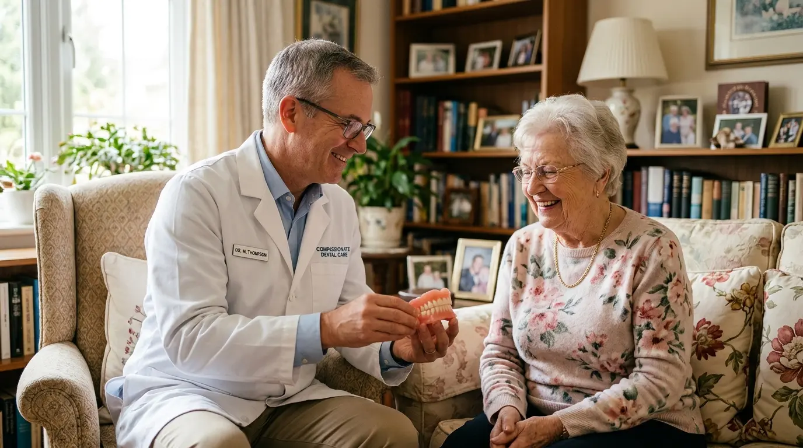

רופא שיניים גריאטרי עד הבית: טיפול מותאם לגיל השלישי
השורה התחתונה:
- רפואת שיניים לגיל השלישי שונה לחלוטין מרפואת שיניים רגילה ודורשת הבנה של מחלות רקע ותרופות.
- למבוגרים סיכון גבוה ליובש בפה, פטריות ופצעים כרוניים עקב תותבות.
- שירות רופא שיניים עד הבית מנגיש את הטיפול למרותקי בית ולחולי דמנציה בסביבה בטוחה ורגועה, וחוסך להם את הטרטור של נסיעות למרפאה.
כאשר אנחנו מחפשים פתרונות שיניים עבור הורינו המבוגרים, אנחנו מבינים מהר מאוד שטיפול רגיל במרפאה כבר לא תמיד מתאים. קשיי התניידות, ירידה קוגניטיבית (כמו אלצהיימר ודמנציה), ומחלות רקע מורכבות הופכות את הביקור במרפאת השיניים למשימה כמעט בלתי אפשרית. כאן נכנס לתמונה שירות של רופא שיניים גריאטרי עד הבית.
מה המייחד טיפול גריאטרי בשיניים?
רפואת שיניים לגיל השלישי אינה מסתכמת רק בעשיית תותבות. היא דורשת מרופא השיניים:
- היכרות מעמיקה עם תרופות: מבוגרים רבים נוטלים כדורים לדילול דם או לתופעות כמו לחץ דם וסוכרת. רופא מיומן יודע כיצד לשלב את הטיפול הדנטלי בצורה בטוחה.
- טיפול ביובש בפה (קְסֶרוֹסְטוֹמְיָה): תרופות רבות גורמות ליובש בפה. רוק חיוני לשמירה על הוואקום של התותבת ולמניעת פטריות. הרופא יודע להמליץ על תחליפי רוק וטיפולים מונעים.
- גישה פסיכולוגית וסבלנות: מטופלים עם דמנציה לעיתים מתקשים לשתף פעולה, חשים חרדה בסביבה זרה או שוכחים מדוע הגיעו למרפאה. הטיפול בביתם שלהם, היכן שהם חשים בטוחים, מקל משמעותית על חרדות אלו.
היתרונות המובהקים של רופא שיניים עד הבית
הבאתו של רופא השיניים הביתה אינה רק מותרות אלא צורך קריטי למרותקי בית. השירות מציע הנגשה מלאה – אנו מביאים ציוד דנטלי נייד ומבצעים טיפולים של בדיקות, בניית שיניים תותבות חדשות, וריפודים ללא צורך בהוצאת הקשיש מביתו.
יתרון משמעותי נוסף הוא השקט הנפשי לבני המשפחה – אין צורך להפסיד ימי עבודה, לארגן הסעות מיוחדות, להיאבק עם כיסא גלגלים במדרגות או לחוות מתח רב סביב הנסיעה הלוך ושוב.
מחפשים פתרון רגיש ומקצועי להורים?
אנו מתמחים בטיפול דנטלי לגיל השלישי באווירה רגועה, בטוחה וביתית לחלוטין.
צרו קשר ונגיע עד אליכם